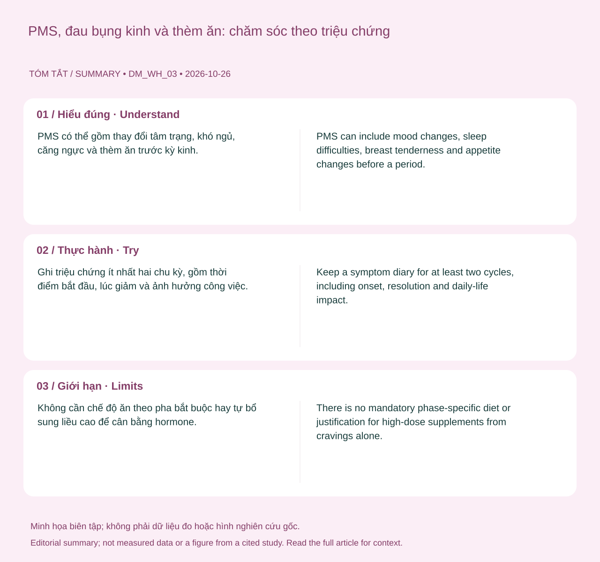

PMS có thể gồm thay đổi tâm trạng, khó ngủ, căng ngực và thèm ăn trước kỳ kinh. Đau bụng kinh có thể xuất hiện cùng thời điểm nhưng không phải mọi đau vùng chậu đều do PMS. Triệu chứng và mức ảnh hưởng khác nhau giữa người và từng tháng.
Tình huống minh họa: Bạn khó ngủ, thèm ăn và dễ cáu trước kinh rồi thấy đỡ sau đó. Mẫu thời gian là thông tin hữu ích, nhưng chưa xác định cần một công thức vi chất. Ghi mức ảnh hưởng và những gì đã thử qua nhiều chu kỳ để trao đổi lựa chọn chăm sóc phù hợp nếu tự chăm sóc chưa đủ.
PMS và đau bụng kinh: những quá trình có thể chồng lấp
PMS mô tả những triệu chứng xuất hiện trước kỳ kinh theo một mẫu có liên hệ với chu kỳ. Các biểu hiện có thể gồm tâm trạng, giấc ngủ, căng ngực và khẩu vị. Đau bụng khi hành kinh có thể liên quan hoạt động co bóp và chất trung gian tại tử cung; không nên gọi mọi đau hoặc mệt quanh kỳ kinh là cùng một hội chứng.

Cũng không chính xác khi gói toàn bộ PMS thành “serotonin thấp” hoặc chỉ thiếu một vi chất. Triệu chứng có cơ chế phức tạp, đồng thời chịu ảnh hưởng của giấc ngủ, đau và bối cảnh sống. Hai người ở cùng một ngày chu kỳ có thể có trải nghiệm khác nhau mà không có nghĩa một người đã quản lý hormone sai.
Nhật ký ít nhất hai chu kỳ giúp phân biệt triệu chứng chủ yếu trước kinh với khó chịu tồn tại cả tháng. Ghi mức ảnh hưởng cụ thể như phải nghỉ làm, bỏ buổi tập hay khó giao tiếp sẽ hữu ích hơn chỉ chấm “hormone tệ”. Khi biện pháp tự chăm sóc chưa đủ, có những lựa chọn điều trị được cân nhắc theo triệu chứng và ưu tiên cá nhân; không cần tự phối nhiều viên bổ sung liều cao để chứng minh mình đang làm đúng. 1 2
Hai chuỗi thay đổi diễn ra song song trong chu kỳ
Có thể nhìn chu kỳ qua buồng trứng và niêm mạc tử cung. Ở buồng trứng, nang trứng phát triển, có thể dẫn tới rụng trứng rồi hình thành hoàng thể. Ở tử cung, niêm mạc thay đổi dưới ảnh hưởng nội tiết và bong ra khi xuất hiện kỳ kinh. Cách chia bốn pha thường dùng trong ứng dụng là một cách trình bày dễ hiểu của những quá trình liên tục này, không phải bốn trạng thái luôn có ngày bắt đầu cố định.
FSH, LH, estrogen và progesterone tham gia điều hòa, nhưng một đường cong trong sách chỉ mô tả mô hình điển hình. Mức hormone và thời điểm chuyển pha khác nhau giữa các chu kỳ. Có chảy máu không tự xác nhận đã rụng trứng, và tính ngược theo lịch không biến ngày dự kiến thành một kết quả xét nghiệm.
Điều này đặc biệt quan trọng khi dùng tránh thai nội tiết, sau sinh hoặc trong tiền mãn kinh. Một lịch pha được thiết kế cho chu kỳ tự nhiên có thể không phù hợp. Dữ liệu nên giúp bạn mô tả trải nghiệm và chuẩn bị cho triệu chứng, thay vì áp đặt rằng một ngày nhất định phải nhiều năng lượng, ham muốn hoặc sức mạnh hơn. Khi chu kỳ thay đổi, cần cân nhắc nhiều nguyên nhân, gồm cả khả năng có thai nếu phù hợp.
Theo dấu FSH, estrogen, LH và progesterone
FSH từ tuyến yên góp phần hỗ trợ các nang phát triển; hoạt động của nang đi cùng sản xuất estrogen và thay đổi niêm mạc tử cung. Gần rụng trứng, hệ phản hồi nội tiết tạo đỉnh LH. Sau rụng trứng, phần nang còn lại hình thành hoàng thể và tạo progesterone, cùng estrogen, góp phần chuẩn bị niêm mạc.
Nếu không có thai, hoàng thể thoái triển, các tín hiệu hormone thay đổi và kỳ kinh có thể bắt đầu. Chuỗi mô tả này giúp hiểu thứ tự sự kiện, không xác định ngày theo lịch cho từng người. Nó cũng giải thích vì sao thuốc nội tiết có thể làm mối liên hệ giữa chảy máu và rụng trứng khác chu kỳ tự nhiên: không nên dùng biểu đồ chuẩn trong sách để đọc mọi hình thức chảy máu hoặc mọi phương pháp tránh thai. 2 4 5 6
Áp lực ngủ và nhịp sinh học không phải một thứ
Hai quá trình giúp điều phối giấc ngủ. Áp lực ngủ tăng trong thời gian thức; adenosine là một phần của cơ chế này. Nhịp sinh học tạo xu hướng tỉnh hoặc buồn ngủ theo thời điểm, chịu ảnh hưởng của ánh sáng và lịch sinh hoạt. Vì hai quá trình tương tác, rất mệt không đồng nghĩa sẽ ngủ dễ vào bất kỳ giờ nào.
Caffeine có thể che bớt cảm giác buồn ngủ bằng tác động lên thụ thể adenosine, nhưng không thay thế thời gian ngủ đã thiếu. Một giấc ngủ trưa muộn có thể làm bạn tỉnh hơn ngay lúc đó và đồng thời khiến buổi tối khó buồn ngủ hơn. Mức ảnh hưởng tùy liều caffeine, cơ địa và lịch ngủ; không có một giờ cắt caffeine bảo đảm phù hợp tất cả.
Đây cũng là lý do nên quan sát cả giờ thức, tiếp xúc ánh sáng và cảm giác ban ngày khi điều chỉnh lịch. Nếu chỉ cố nằm thêm thật lâu, bạn có thể tăng thời gian trên giường mà chưa tăng được thời gian ngủ. Với mất ngủ kéo dài, cần đánh giá và can thiệp phù hợp, thay vì tự ép ngủ hoặc tăng chất bổ sung để đạt biểu đồ mong muốn. 7 8
Bảng đối chiếu để đọc đúng thông tin
| Quá trình | Mô tả khái quát | Giới hạn ứng dụng |
|---|---|---|
| Hành kinh | Xuất hiện chảy máu kinh | Không tự xác nhận chu kỳ trước đã rụng trứng |
| Phát triển nang | Hoạt động buồng trứng và nội tiết thay đổi | Không có ngày bắt đầu năng lượng cao chung |
| Rụng trứng | Một sự kiện sinh học có thể xảy ra | Lịch dự đoán không phải xét nghiệm xác nhận |
| Hoàng thể | Giai đoạn sau rụng trứng | Không buộc mọi người phải giảm tập |
Ứng dụng thực tế: làm gì và đánh giá bằng cách nào?
Ghi triệu chứng ít nhất hai chu kỳ, gồm thời điểm bắt đầu, lúc giảm và ảnh hưởng công việc. Duy trì bữa ăn cân bằng, vận động phù hợp và ngủ đủ; dùng nhật ký để trao đổi về lựa chọn điều trị nếu cần.
- Ghi điều ảnh hưởng cuộc sống. Thời điểm, đau, chảy máu, giấc ngủ hoặc mức khó chịu cụ thể giúp làm rõ câu hỏi.
- Ghi những thay đổi liên quan. Thuốc, tránh thai, lịch sống, khả năng mang thai và giai đoạn sau sinh có thể đổi cách diễn giải.
- Chọn hỗ trợ theo mục tiêu. Có thai, tránh thai, giảm đau và điều chỉnh tập là những mục tiêu khác nhau; không dùng một biểu đồ thay cho mọi quyết định.
- Chuẩn bị trao đổi khi cần. Mang diễn biến và điều đã thử, hỏi rõ lựa chọn cùng kế hoạch theo dõi thay vì tự mua một bộ xét nghiệm hoặc phác đồ bổ sung.
Khi nào nên tìm hỗ trợ?
Không cần chế độ ăn theo pha bắt buộc hay tự bổ sung liều cao để cân bằng hormone. Thèm ăn không đủ để suy ra thiếu một vi chất cụ thể.
Khám nếu đau hoặc thay đổi tâm trạng ảnh hưởng sinh hoạt, kéo dài ngoài giai đoạn trước kinh, hoặc các biện pháp tự chăm sóc không giúp.
Nguồn tham khảo và phạm vi hỗ trợ
-
NHS — PMS (premenstrual syndrome) — Public health guidance. Hỗ trợ: Triệu chứng PMS, nhật ký và lựa chọn chăm sóc.
-
NHS — Periods — Public health guidance. Hỗ trợ: Chu kỳ, triệu chứng và chảy máu bất thường.
-
WHO — Healthy diet — Public health guidance. Hỗ trợ: Chế độ ăn đa dạng và chất lượng thực phẩm.
-
Endocrine Society — Reproductive Hormones — Professional patient guidance. Hỗ trợ: Vai trò các hormone sinh sản và xét nghiệm phù hợp.
-
ACOG — Fertility Awareness-Based Methods of Family Planning — Professional patient guidance. Hỗ trợ: Chất nhầy, BBT, thời điểm sinh sản và giới hạn tránh thai.
-
OpenStax Biology 2e — Hormonal Control of Human Reproduction — Physiology textbook. Hỗ trợ: FSH, LH, hormone buồng trứng và trình tự sinh lý chu kỳ.
-
NHLBI — Your Sleep/Wake Cycle — Public health guidance. Hỗ trợ: Nhịp sinh học, ánh sáng và áp lực ngủ.
-
NHLBI — Healthy Sleep Habits — Public health guidance. Hỗ trợ: Thói quen ngủ và lịch sinh hoạt.
Cập nhật nội dung và nguồn: 26/10/2026. Nội dung giáo dục; chưa có xác nhận duyệt bởi bác sĩ.